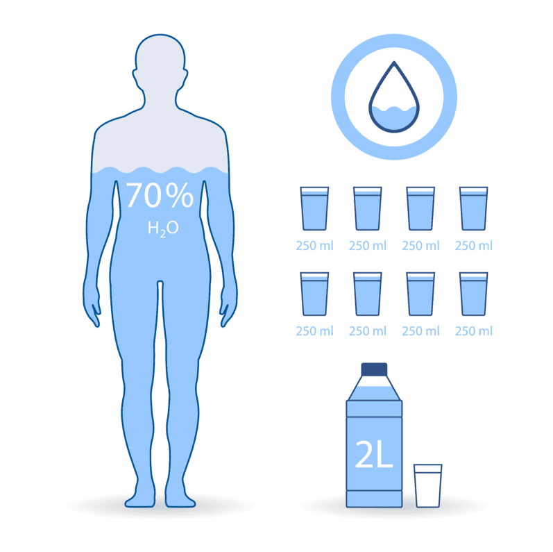

Océan et corps humain
Introduction

Les océans constituent 70% de la surface de la terre.

Le corps humain est constitué de 60 à 65% d'eau.
De la même manière que la proportion d'eau dans notre corps avoisine celle de la surface de la Terre recouverte par les océans, bien que différentes en apparence, elles partagent de nombreuses caractéristiques communes et sont même liées, aussi bien dans leur fonctionnement que dans leur problématiques.
Explorons tout ça !